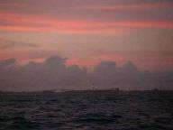
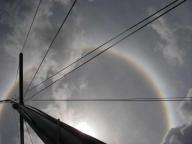
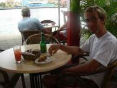
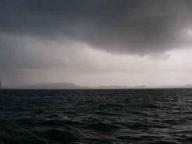

Jan Haring.nl - De wereld om met een Jan Haring - Joost Jager & Ilse Wintermans
|
|


|
Dobberen naar Cartagena
» exacte locatie
 Ineens ging het snel. Eigenlijk hadden we nog wel een dagje op Aruba willen blijven maar vanwege een goed weerbericht besloten we maandagavond te vertrekken. De tocht naar Cartagena schijnt in de top 5 van beruchte zeiltochten te staan maar dat hoorden we pas op Curacao. Je kunt bij het weerbericht standaard 5 knopen (1 bft) optellen zeggen ze. Klinkt heel spannend allemaal maar ondertussen is onze snelheid 2 knopen (traag en de zon is erg heet) op de Bolle Jan. Dat is die enorme lap die we op de
Golf van Biskaje voor het eerst er op hadden gezet. We zijn gestopt met motoren en wachten op wind (we hebben niet zoveel diesel mee dat we 370 mijl kunnen motoren). De weerberichten beloven ons toch echt meer dus kom maar op! Naast dat de site er uit lag hadden we los daarvan ook problemen met de mail vorige week. Als het goed is werkt het nu allemaal weer. Vorige week dinsdag was mijn vader aangekomen. Hij wilde graag een nachttochtje meemaken en was speciaal daarvoor van Aruba naar Curacao doorgevlogen.
Natuurlijk was hij ook maximaal beladen met heel veel spullen voor ons die we nergens konden kopen. Er zaten ook wat kadootjes tussen, erg leuk! De watermaker is ook weer terug. Mijn vader vond het reuzespannend van te voren, maar hij heeft van het tochtje genoten. Een mooi beeld van Curacao, het silhouet van de hoge brug naast de industrie van Willemstad na zonsondergang. Het was wel erg gezellig om tijdens de wacht te kunnen kletsen. Na ons keurig via de marifoon gemeld te hebben bij de douane
van Aruba klonk ineens 'Hafskip Hafskip, hier de Rajac'... Dat is ook een Nederlandse vertrekkersboot en daar hadden we al mee gemaild over Venezuela. 'Als je nu naar rechts kijkt zie je ons liggen!' Rolf nodigde ons uit voor de koffie en Femke had heerlijke brownies gemaakt. Erg leuk hen ontmoet te hebben. Het weekend hebben we ons vermaakt met mijn oom Jos en neef Dennis. Jos is timmerman en heeft zo'n auto met open laadbak. Hij reed ons langs wat handige adresjes dus onze gasflessen zijn weer
gevuld en we hebben nog wat spullen gekocht. Ons buitenboordmotortje blijft het slecht doen maar ze verkochten hier helaas geen tweedehandse. Jos heeft zelf zijn huis gebouwd van hout en dat zag er leuk uit. Verder nog het eiland rondgereden en onder andere de ingestorte Natural Bridge bekeken. Het landschap is erg dor en droog met overal waar je kijkt cactussen. Maandag heeft m'n vader ons nog mee uit eten genomen in een Hollands eetcaf=e9. Dat was erg lekker (varkenshaasmedaillons, jawel) en gezellig.
Daarna afscheid genomen, altijd een beetje gek. Nog wat boodschappen gedaan voor de oversteek en terug naar de boot geroeid. Voor het in- en uitklaren moet je aanleggen bij de douane en dan komen ze naar je toe. Vlak na zonsondergang gooiden we los en hebben we nog even kunnen zeilen. We moesten zelfs het tweede rif (om het grootzeil kleiner te maken) zetten, dus we begonnen goed! Ondertussen dobberen we verder en hebben we een snelheid van 2,5 nee, zelfs 2,6 knopen...
Ineens ging het snel. Eigenlijk hadden we nog wel een dagje op Aruba willen blijven maar vanwege een goed weerbericht besloten we maandagavond te vertrekken. De tocht naar Cartagena schijnt in de top 5 van beruchte zeiltochten te staan maar dat hoorden we pas op Curacao. Je kunt bij het weerbericht standaard 5 knopen (1 bft) optellen zeggen ze. Klinkt heel spannend allemaal maar ondertussen is onze snelheid 2 knopen (traag en de zon is erg heet) op de Bolle Jan. Dat is die enorme lap die we op de
Golf van Biskaje voor het eerst er op hadden gezet. We zijn gestopt met motoren en wachten op wind (we hebben niet zoveel diesel mee dat we 370 mijl kunnen motoren). De weerberichten beloven ons toch echt meer dus kom maar op! Naast dat de site er uit lag hadden we los daarvan ook problemen met de mail vorige week. Als het goed is werkt het nu allemaal weer. Vorige week dinsdag was mijn vader aangekomen. Hij wilde graag een nachttochtje meemaken en was speciaal daarvoor van Aruba naar Curacao doorgevlogen.
Natuurlijk was hij ook maximaal beladen met heel veel spullen voor ons die we nergens konden kopen. Er zaten ook wat kadootjes tussen, erg leuk! De watermaker is ook weer terug. Mijn vader vond het reuzespannend van te voren, maar hij heeft van het tochtje genoten. Een mooi beeld van Curacao, het silhouet van de hoge brug naast de industrie van Willemstad na zonsondergang. Het was wel erg gezellig om tijdens de wacht te kunnen kletsen. Na ons keurig via de marifoon gemeld te hebben bij de douane
van Aruba klonk ineens 'Hafskip Hafskip, hier de Rajac'... Dat is ook een Nederlandse vertrekkersboot en daar hadden we al mee gemaild over Venezuela. 'Als je nu naar rechts kijkt zie je ons liggen!' Rolf nodigde ons uit voor de koffie en Femke had heerlijke brownies gemaakt. Erg leuk hen ontmoet te hebben. Het weekend hebben we ons vermaakt met mijn oom Jos en neef Dennis. Jos is timmerman en heeft zo'n auto met open laadbak. Hij reed ons langs wat handige adresjes dus onze gasflessen zijn weer
gevuld en we hebben nog wat spullen gekocht. Ons buitenboordmotortje blijft het slecht doen maar ze verkochten hier helaas geen tweedehandse. Jos heeft zelf zijn huis gebouwd van hout en dat zag er leuk uit. Verder nog het eiland rondgereden en onder andere de ingestorte Natural Bridge bekeken. Het landschap is erg dor en droog met overal waar je kijkt cactussen. Maandag heeft m'n vader ons nog mee uit eten genomen in een Hollands eetcaf=e9. Dat was erg lekker (varkenshaasmedaillons, jawel) en gezellig.
Daarna afscheid genomen, altijd een beetje gek. Nog wat boodschappen gedaan voor de oversteek en terug naar de boot geroeid. Voor het in- en uitklaren moet je aanleggen bij de douane en dan komen ze naar je toe. Vlak na zonsondergang gooiden we los en hebben we nog even kunnen zeilen. We moesten zelfs het tweede rif (om het grootzeil kleiner te maken) zetten, dus we begonnen goed! Ondertussen dobberen we verder en hebben we een snelheid van 2,5 nee, zelfs 2,6 knopen...

|
|
|

Nachtvaart naar Aruba
» exacte locatie
Na een laatste verkenning van het Spaanse Water, een groot binnenmeer met open verbinding naar zee, vertrokken we laat in de middag naar Aruba. Het zou mijn eerste kennismaking zijn met een zeilboot in volle zee. De spanning was voor mij goed voelbaar,zeker op het moment waarop de boot de nauwe doorgang naar open zee gepasseerd is. In het begin erg onrustig water; het lijkt wel of de golven van alle kanten komen. Na een uurtje wordt alles rustiger en komen de golven alleen nog van achteren. De zonsondergang
is mooi en de duisternis valt langzaam in. Urenlang varen we langs de kust van Curacao maar wel op steeds grotere afstand. Het is een zee van lichtjes, er lijkt geen eind aan te komen. Het is heerlijk weer, veel sterren, niet te veel wind en een mooie sikkel van de maan, die tot ongeveer 23.00 uur de zee verlicht. Ik voel me rustig en veilig en geniet van het geluid dat de golven maken; het klinkt nooit hetzelfde. Vanwege de sterren wordt het vannacht niet echt donker. Boten zie je op grote afstand.
Spannend is wat die "grote jongens" gaan doen. De eerste vier uur wacht zit er op. Ilse neemt de wacht van Joost over en komt gezellig naast me zitten. Het zijn voor mij onvergetelijke uren. Als je naar de top van de mast kijkt, die met drie lampjes is verlicht ,zie je pas goed hoe de boot in beweging is. Op het achterdek merk je daar niet zo veel van. Langzaam wordt de lucht valer van kleur en kondigt de dageraad zich aan. Om zes uur voorbereiding voor het ontbijt dus wordt er eerst een tonijn gevangen.
Als de vis schoon is kleurt de hemel rood en komt de zon boven de horizon uit. Aruba is al geruime tijd in beeld; de contouren worden duidelijker. De laatste uren varen we langs de kust en om ongeveer 9.00 uur varen we naar de toegewezen aanlegplaats voor het inklaren. Een ervaring rijker klimmen we op de kademuur van de cruisehaven van Aruba.
|
reageer!
Piet (vader Ilse), 1/4/2007, 23:00
|
Halo
» exacte locatie
Tja... We zijn even uit de lucht geweest omdat we waren vergeten te
betalen. Niet echt handig van ons, komt vast door de tropische
temperaturen hier ;-). Ondertussen liggen we al een paar dagen in het
Spaanse water. We hebben vast wat grote inkopen gedaan voor de Pacific
en doen wat klusjes. Zaterdag zijn we met Martin en Dirma van Dingo
wezen duiken. Zij hebben zelf alle spullen en dat paste maar net in
twee bijbootjes. Dit keer gedroeg ons motortje zich voorbeeldig en
raceten we naar de andere kant van de baai. Daar vlakbij was het
duikstrandje en hebben we nog wat spullen gehuurd. Het was echt
superlang geleden dat we hadden gedoken. Eerst gingen Joost en ik. Was
wel even wennen weer met op een bepaalde diepte blijven zweven maar zo
leuk! Er lag een wrakje op de bodem en er zwommen megapapegaaivissen.
Het is zo rustgevend om onder water door te kunnen ademen. Daarna
gingen Martin en Dirma en pasten wij even op Boaz. Sinds we hier
liggen vertrekt Dingo elke dag de volgende dag, dus morgen vertrekken
ze echt... Wij vinden het natuurlijk wel gezellig dat ze er nog zijn.
Doen we gewoon nog een koffietje met stroopwafel, jaja. Vandaag nog
iets moois gezien! Een rood/gele cirkel rondom de zon, een halo. Dit
verschijnsel komt doordat er zich ijskristallen in de atmosfeer
bevinden. Deze ijskristallen kunnen het licht breken (in een spectrum)
of reflecteren. Deze ijskristallen bevinden zich in hele hoge
sluierbewolking. Het gebied binnen de Halo is donkerder dan de hemel
er buiten. Dit komt doordat het licht in dat gebied een andere
richting gaat, weg van als je er naar kijkt. Helaas is dat op de foto
niet goed te zien.

|
|
|
Lekker nederlands
» exacte locatie
Na een heerlijk rustig nachttochtje werden we verwelkomt met een
lekker hollands buitje op Cura=E7ao. Als de afstand te groot is om
overdag af te leggen dan varen we een nachtje door zodat we bij licht
kunnen aanlopen. Via een smal geultje vaar je het Spaanse water
binnen, een grote inlandse baai met wat eilandjes. Het lijkt wel of je
gaat kamperen in Zuid-Frankrijk en je bijna alleen Nederlandse buren
hebt, alleen is dit een drijvende camping. Helemaal achteraan lag
Dingo en we mochten de boot wel even langszij leggen voor een
ontbijtje! Erg luxe met croissantjes en.... echt volkorenbrood met
hagelslag. Zo konden we elkaar meteen weer helemaal bijkletsen, erg
gezellig. 's Middags zijn we naar Willemstad gegaan om in te checken
bij de douane en hebben we een terrasje gepakt (met bitterballen,
jaja) bij de pontjesbrug. Dat is een drijvende brug en als er een boot
langs wil dan varen ze de brug even over dwars, een leuk gezicht.
Vanmorgen naar de supermarkt was een groot feest van herkenning.
Vanillevla, prei, echte mayonaise, kroketten, frikadellen, appelstroop
en als slagroom op de taart verkochten ze er ook de bekende
wereldgerechten. Kip Madras is onze favoriet en toen ik die aan het
klaarmaken was vanavond waande ik me weer aan het IJsselmeer. Het
voelde ineens zo lekker nederlands. Zo ook dat je hier betaald met de
Antilliaanse florijn ofwel gulden en dat je tegen iedereen nederlands
kan praten. Vanaf de ankerplek gaat er 1 keer per uur een bus naar
Willemstad en vanaf daar kun je met kleine busjes verder. Zo heb je
'busje Rond' die rijdt over de ringweg langs heel veel verschillende
grote winkels. Daar hebben we ons wel even mee vermaakt. Joost zocht
iets speciaals voor de motor helaas zonder resultaat en ondertussen
ging ik zeekaarten kopieren. Er zat daar een jongetje van een jaar of
8 huiswerk te maken dus mijn juffenhart kon het niet laten even te
kijken. Hij was een invuloefening aan het doen uit een superouderwets
boekje zoals ze die hadden toen ik op de basisschool zat, dat had ik
niet verwacht. We blijven hier even liggen want m'n vader komt dinsdag
aan.


|
|
|

|

|
|
|